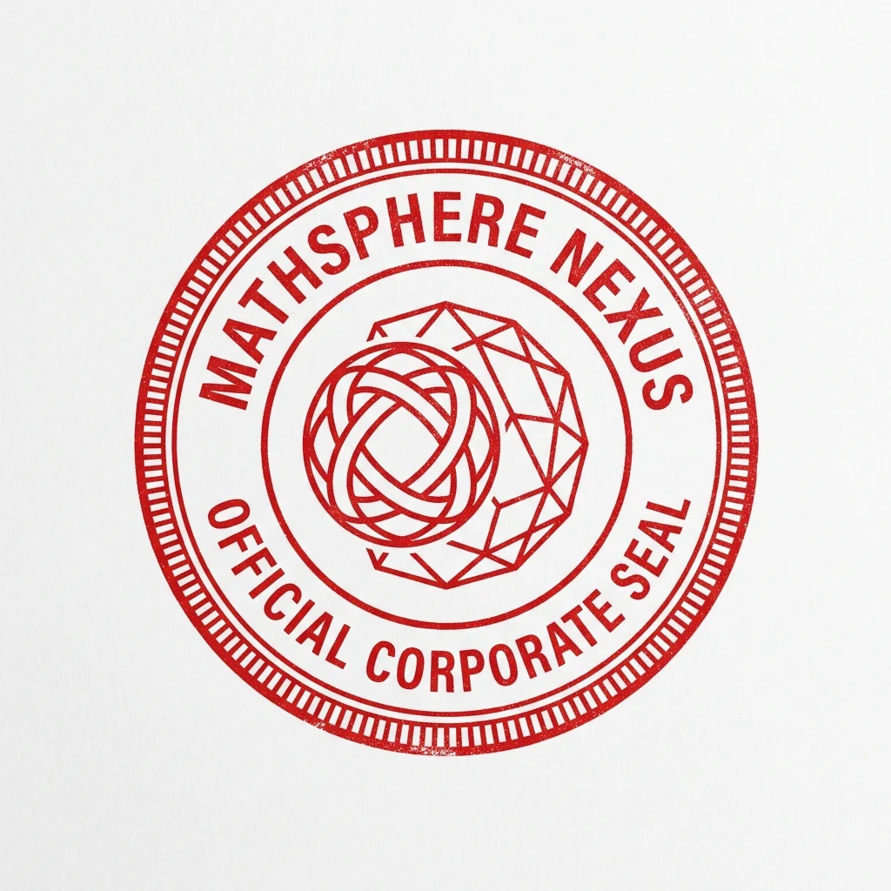

MathSphere NexusA progress diary. Dated entries at the moments that matter — a release, a landing, a decision — written from the record, the way the commit messages are: what was done, why, and what is still open. The git history stays the exact ledger; this is its public face.
Our development cycle, drawn as a wheel of six stages and placed on the About page — a description of how the work actually happens here, and the procedure we will keep following.
The voluntary start lock joined the design, its prototype proven road by road in the owner’s own hands — and all four prototypes were run together on the owner’s machine.
One day that settled the guide, the sovereignty structure, the three validators, the broker, and the multi-user design — and proved three of its pieces as working prototypes before the day was out.
The rebuilt site went live whole: every page in the house style, the seal as signature, the Diary and the Blog open.
Why this site is plain files on GitHub Pages instead of a page-builder — and why every future update is just updating files, like updating scripts.
This site is the public home of MathSphere Nexus, and of Wizard Central — the project this company is built around. Start here: the free Wizard Central Toolkit is available now.
The free toolkit's 0.2.x line ends at 0.2.8: what the last releases fixed, how the final gate read, and what comes next.
A command is what you type. The name is what the project is.